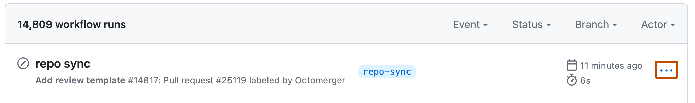

On GitHub, navigate to the main page of the repository.
Under your repository name, click Actions.

In the left sidebar, click the workflow you want to see.

To delete a workflow run, select , then click Delete workflow run.

Review the confirmation prompt and click Yes, permanently delete this workflow run.